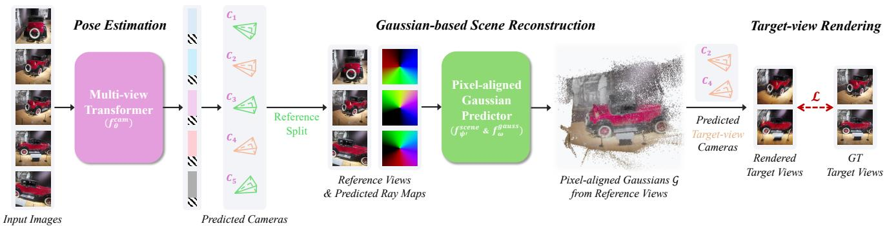

Raw Output Pose AccRaw Output Pose Acc. Figure 1. E-RayZer, a self-supervised 3D vision model that predicts camera poses and scene geometry as 3D Gaussians. The use of explicit 3D geometry yields more geometrically grounded poses compared to its implicit counterpart, RayZer [25]: they are comparable to (and sometimes surpass) those from our supervised baseline, VGGT [59]. Furthermore, E-RayZer serves as a self-supervised visual pretraining framework, with learned representations that transfer effectively to downstream tasks requiring 3D understanding, outperforming previous representation learners such as CroCo v2 [66], VideoMAE V2 [61], DINOv3 [51], and Perception Encoder [7].这张图概括 E-RayZer 的整体方法流程。阅读时先看模块之间传递的训练信号，再看作者如何把目标拆成可优化的子问题。

Figureure 2 · E-RayZer Model & TrainingFigure 2. E-RayZer Model & Training. E-RayZer first predicts camera poses and intrinsics for all images. Then it follows RayZer [25] to split images into two sets. E-RayZer predicts explicit 3D Gaussians as scene representation from the reference views $( \mathcal { T } _ { \mathrm { r e f } } )$ , and renders the scene using self-predicted target-view $( \mathcal { T } _ { \mathrm { t g t } } )$ cameras. Finally, E-RayZer is trained with self-supervised photometric losses on target views.这张图来自论文 PDF 的结构化抽取。当前用于辅助理解 E-RayZer 的方法或实验，请结合正文精读段落一起看。